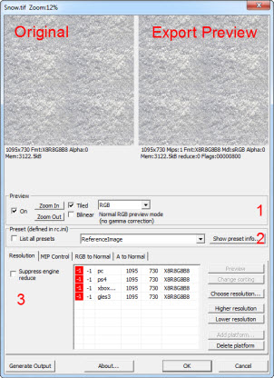
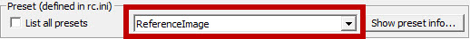
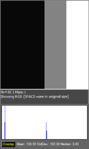
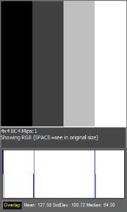
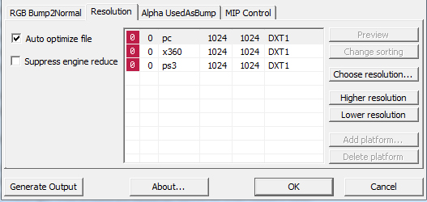
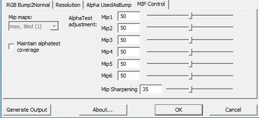
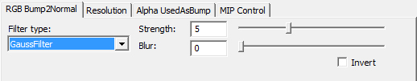
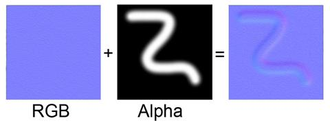
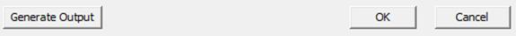

Обзор
Основная функция диалогового окна текстуры — добавление к текстуре метаданных, которые компилятор ресурсов позже может использовать для создания текстуры, адаптированной для целевой платформы. В диалоговом окне можно настроить несколько параметров, таких как схема сжатия, параметры генерации MIP-карт, а также комбинации карт нормалей и альфа-карт. Пользовательский интерфейс является частью компилятора ресурсов и запускается при сохранении файла как CryTIF из Photoshop.
Формат CryTIF (*.tif) используется в качестве промежуточного формата файла, основанного на формате TIFF, который содержит несжатую текстуру, а также различные настройки компилятора ресурсов, хранящиеся в виде метаинформации. При каждом сохранении текстуры в виде файла *.tif (CryTIF) плагин отправляет текстуру компилятору ресурсов, создавая текстуру в формате файла, специально предназначенном для целевой платформы. Используя пресеты для несжатой текстуры, можно очень гибко указать конечный выходной формат. Инженеры могут легко поручить компилятору ресурсов создать PC и текстуру консоли с оптимальными настройками, специфичными для целевой платформы, из одного исходного файла.
Обратите внимание, что TIF не перезагружается после изменения его метаданных в диалоговом окне пользователя RC. Поэтому, если файл снова сохраняется в Photoshop без предварительной перезагрузки, настройки необходимо указать заново.
Создание файлов *.dds напрямую без компилятора ресурсов не рекомендуется и не поддерживается.
Чтобы сохранить текстуру в Photoshop, перейдите в Файл меню, нажмите Сохранить. Когда появится диалоговое окно файла, выберите CryTIF в качестве формата выберите имя и сохраните. После того, как файл *.tif будет записан на диск, появится диалоговое окно текстуры компилятора ресурсов.
Компиляция текстур
Чтобы использовать исходную текстуру (.tif) в CRYENGINE, необходимо вызвать компилятор ресурсов для компиляции текстуры в более оптимизированный формат, который может быть эффективно загружен движком (обычно *.dds).
Если файл *.tif сохраняется с Плагин CryTIF для Photoshop плагин открывает диалоговое окно текстуры компилятора ресурсов, где можно выполнить определенные настройки текстуры.
Окно предварительного просмотра
В верхней области вы можете увидеть два изображения: исходное изображение слева и предварительный просмотр обработанного изображения с использованием пресета справа.
Если размеры изображения Photoshop, которое вы пытаетесь сохранить, не являются степенью двойки (т. е. 256x256, 512x512, 1024x1024), вместо предварительного просмотра вы увидите текст предупреждения.
Непосредственно под изображениями предварительного просмотра вы можете увидеть различные свойства изображения, такие как разрешение, количество MIP-карт, формат текстур и объем памяти. Исходные значения отображаются слева, значения справа основаны на выбранной предустановке или пользовательских настройках.

| Номер | Описание |
|---|---|
| 1 | Параметры предварительного просмотра
|
| 2 | Выбор предустановки
|
| 3 | Дополнительные настройки, Управление уменьшением разрешения |
Навигация мышью | Описание |
|---|---|
Колесо мыши | Увеличение/уменьшение масштаба. |
Щелчок кнопкой мыши + перемещение | Переместить текстуру. |
Пресеты
Пресеты определяют, как текстура компилируется для использования в игре.

В этом раскрывающемся списке содержатся пресеты, которые вы можете назначить текстуре. По умолчанию RC пытается определить тип текстуры, просматривая суффикс имени файла (например, _ddn, _ddna) и отображает только пресеты, соответствующие этому типу.
Текстура, скомпилированная с использованием предустановленных настроек, автоматически отображается в окне предварительного просмотра справа. Свойства текстур также обновлены.
В списке ниже описан полный набор доступных пресетов текстур. Его можно расширить, добавив новые записи в файл конфигурации RC, расположенный по адресу Tools/rc/rc.ini.
| Предустановка | Описание/Использование |
|---|---|
| Альбедо | Используется для карт Альбедо/Диффуза, которым не нужен альфа-канал. |
| AlbedoWithOpacity | Используется для Альбедо/Рассеянный карты с альфа-каналом, который сохраняет прозрачность для альфа-смешивания. |
| AlbedoWithCoverage | Используется для Альбедо/Рассеянный карты с альфа-каналом, который используется для альфа-тестирования. |
| AlbedoWithGenericAlpha | Используется для Альбедо/Рассеянный карты с общими значениями альфа. |
| Отражение | Используется для карт Reflectance/Specular, находящихся в пространстве sRGB (рекомендуется). |
| Reflectance_Linear | Используется для карт Reflectance/Specular, которые хранятся в линейном пространстве (в основном устаревшие). |
| ReflectanceWithSmoothness_Legacy | Используется для карт Reflectance/Specular, которые сохраняют блеск в альфа-канале (устаревшие версии). |
| Нормальные | Используется для карт нормалей без сглаживания/глянца. |
| NormalsWithSmoothness | Используется для карт нормалей, где гладкость/глянец хранится в альфа-канале (рекомендуется). |
| NormalsWithSmoothness_Legacy | Используется для устаревших карт нормалей, где гладкость/глянец хранится в альфа-канале. Этот пресет следует использовать для ресурсов, созданных с использованием нашего устаревшего дистрибутива глянца (до CE 3.8). |
| NormalsFromDisplacement | Генерирует карту нормалей из входной карты высоты/перемещения. |
| Смещение | Используйте только альфа-канал шкалы серого. Используется для Карты смещения текстуры. |
| Terrain_Albedo | Для использования с Terrain.Layer Шейдер. Автоматически применяет фильтр верхних частот для удаления низкочастотных цветов. |
| Terrain_Albedo_HighPassed | Этот пресет следует использовать вместо Terrain_Albedo, если текстура уже имеет фильтр высоких частот. |
| Decal_AlbedoWithOpacity | |
| Detail_MergedAlbedoNormalsSmoothness | Для использования с Детальное картографирование. |
| Detail_MergedAlbedoNormalsSmoothness_Lossless | Для использования с Детальное картографирование. Никакого сжатия. |
| CloudShadows | |
| EnvironmentProbeHDR | Используется для зеркальной кубической карты Environment Probe. |
| EnvironmentProbeHDR_Irradiance | Используется для диффузной кубической карты Environment Probe. |
| SkyboxLDR | Используется для простых текстур, отличных от HDR Skybox. |
| SkyboxHDR | Используется для текстур Skybox с высоким динамическим диапазоном. |
| ColorChart | Для использования с текстурами ColorChart. См. Урок — Цветокоррекция для получения дополнительной информации. |
| Градиент | |
| оттенки серого | Похож на предустановку «Градиент», но использует сжатие BC4 и MIP-карты.   |
| LensOptics | Для использования с Редактор бликов объектива текстуры. Отсутствие mips предотвратит размытие результатов. |
| LightProjector | Для использования с текстурами, которые будут проецироваться из источников света и световых лучей. Несжатый формат. |
| LoadingScreen | DEPRECATED |
| Миникарта | |
| Дульная вспышка | |
| Непрозрачность | Используется для общих одноканальных текстур в оттенках серого. |
| Несжатый | |
| ReferenceImage | |
| ReferenceImage_Linear | |
| WrinkleMask_Linear | |
| UserInteface_Lossless | |
| UserInterface_Compressed | |
| LUT_RGBA8 | |
| LUT_RG8 | |
| LUT_RG16 | |
| SF_Image | Этот пресет следует использовать для текстур, используемых Scaleform, таких как экраны загрузки. |
| SF_Image_nonpower2 | |
| SF_Gradient | |
| SF_Font |
Вкладка «Разрешение»

Раскрывающийся список «Уменьшить разрешение» позволяет выбирать различные настройки разрешения. Полезно, если вы сохраняете исходный файл в большом разрешении, хотя знаете, что в игре он будет отображаться в гораздо меньшем размере (т. е. текстура, используемая для продвижения и для конечного игрового актива).
Сумма | Результат |
|---|---|
0 | Сохраняет исходный размер текстуры (по умолчанию). |
1 | Уменьшает разрешение текстур на 1/2, уменьшает потребление памяти до 1/4 от исходной памяти. |
2 | Уменьшает разрешение текстур на 1/4, уменьшает потребление памяти до 1/16 от исходной памяти. |
3 | Уменьшает разрешение текстур на 1/8, уменьшает потребление памяти до 1/64 от исходной памяти. |
-1 | Увеличивает разрешение текстур в 2 раза, увеличивает потребление памяти в 4 раза по сравнению с исходной памятью. |
-2 | Увеличивает разрешение текстур в 4 раза, увеличивает потребление памяти в 16 раз по сравнению с исходной памятью. |
Внутри движка могут быть реализованы процессы автоматического изменения размера текстур. Пожалуйста, уточните у своих программистов, включили ли они такую оптимизацию для вашей среды разработки. Кроме того, на вкладке «Разрешение» представлены функции оптимизации и исключения.
- Подавить двигатель, уменьшить: Если вы переключаетесь с высокой спецификации на низкую, текстуры автоматически уменьшаются, чтобы их можно было загрузить в память видеокарты. Этот флаг перезаписывает все настройки RC и сохраняет исходный размер при всех различных настройках качества. Это следует использовать для текстур, содержащих текст. Когда это включено, флаг «/ser=1» будет добавлен в метаданные TIF.
MIP Вкладка управления
Элементы управления позволяют вручную настраивать MIP-карты альфа-канала. Это особенно полезно, когда текстура содержит мелкие детали, например, в сетчатом заборе.
Вы можете изменить смещение альфа-теста на разных уровнях MIP с помощью ползунков. Значение текстуры корректируется, и при условии постоянного значения альфа-теста вы можете настроить результат.

Самый нижний ползунок, который вы видите при прокрутке вниз, управляет резкостью MIP. Это фильтр резкости, который применяется к мип-картам для противодействия размытию, которое естественным образом возникает при уменьшении масштаба текстур во время создания мип-карт. Эта функция может значительно улучшить качество изображения. Значение по умолчанию — 35.
Раскрывающийся список MIP-карт | |
|---|---|
Нет (0) | Не создает мип-карты. |
макс, плиточный (1) | Настройка по умолчанию. Создает максимально возможное количество MIP-карт. |
Поддержание покрытия альфа-тестирования пытается сохранить альфа-покрытие исходного альфа-канала. Это особенно полезно для растительности, чтобы листья не истончались на расстоянии.
Метод MIP-фильтра позволяет изменить алгоритм понижения разрешения, используемый для создания MIP-карт.
RGB на обычную вкладку

Плагин CryTIF может конвертировать карту рельефа в оттенках серого в карту нормалей. Чтобы активировать эту функцию, выберите тип фильтра, отличный от Нет (выкл.).
Параметр | Описание |
|---|---|
Тип фильтра | Изменяет фильтр, используемый для обработки текстуры. |
Сила | Определяет силу ударов. Это можно использовать в качестве дополнительной компенсации, но обычно вы можете лучше контролировать это, отредактировав текстуру в оттенках серого в Photoshop (диапазон 0–15; по умолчанию 5). |
Размытие | Размывает текстуру (диапазон 0–10; по умолчанию 0). |
Инвертировать | Инвертирует карту высот. Белые цвета тогда интерпретируются как ямки, а черные - как шишки. |
Вкладка «От A до обычной» (устарело)
В процессе производства иногда необходимо смешать низкочастотную карту нормалей со второй высокочастотной картой нормалей, чтобы создать вариацию исходной низкочастотной версии. Если бы вы сделали это непосредственно в Photoshop, вы потеряли бы сложные детали при масштабировании текстуры в процессе преобразования. Это приведет к потере детализации в высокочастотной части текстуры и, возможно, к неправильным нормалям. Эта функция преобразует высокочастотный альфа-канал в оттенках серого карты нормалей и объединяет его с обычными каналами RGB карты нормалей.
Поскольку эта функция выполняется после масштабирования и использования собственного алгоритма повышения резкости, а также прохода нормализации низкочастотной карты нормалей, детализация лучше, чем при традиционном подходе. Это также позволяет гораздо легче его настраивать. Чтобы включить эту функцию, выберите Тип фильтра, отличный от Нет (выкл.).
Окно предварительного просмотра должно измениться, чтобы указать на изменение.
Обратите внимание, что при использовании PBR в CRYENGINE альфа-канал карты нормалей обычно уже содержит плавность, поэтому эту функцию следует считать устаревшей.

Создать вывод

Нажатие кнопки Создать вывод Кнопка вызывает немедленное преобразование в целевой выходной формат без закрытия диалогового окна CryTIF.
Затем можно переключиться на CRYENGINE и посмотреть результаты измененных вами настроек (Sandbox автоматически перезагружает/обновляет измененные текстуры). Это полезно для быстрого тестирования настроек сжатия без повторного сохранения или повторного открытия диалогового окна каждый раз, когда вы вносите изменения.
Устранение неполадок
Обратите внимание, что TIF не перезагружается после изменения его метаданных в диалоговом окне пользователя RC. Поэтому, если файл снова сохраняется в Photoshop без предварительной перезагрузки, настройки необходимо указать заново.
Чтобы запустить RC, плагину CryTIF необходимо знать путь, по которому находится RC. Это можно настроить в Photoshop в разделе Справка -> О плагине -> CryTIFPlugin. Если исполняемый файл RC не найден, диалоговое окно конфигурации открывается автоматически.